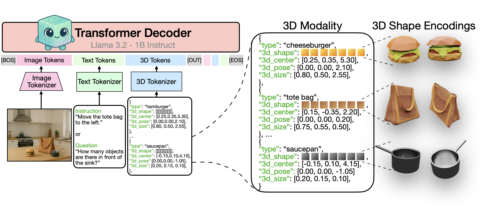
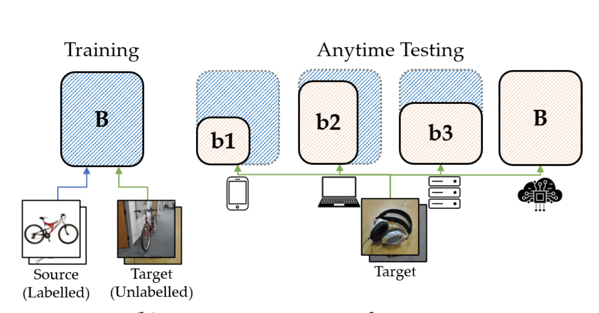
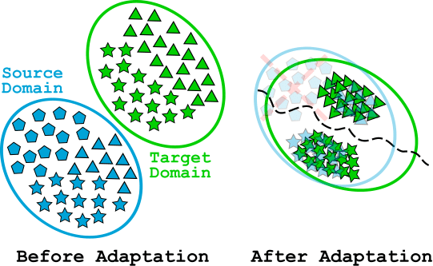

|
Research
My research interests lie in understanding the principles of learning from multiple
modalities and exploring how knowledge from one modality can be transferred to applications in
others, with a goal to design embodied multimodal agents benefiting humanity. Obtaining answers to
questions like - "Do toddlers use the same principles in learning new languages as they do in
learning how to walk?" - should be fun!
|
|

|
Aligning Text, Images, and 3D Structure Token-by-Token
Aadarsh Sahoo, Vansh Tibrewal, Georgia Gkioxari
arXiv, 2025.
project page /
arXiv /
code /
bibtex
We present a unified LLM that aligns language, images, and structured 3D scenes and demonstrate it
across rendering, recognition, instruction-following, and 3D QA.
|
|

|
AnyDA: Anytime Domain Adaptation
Omprakash Chakraborty, Aadarsh Sahoo, Rameswar Panda, Abir Das
11th International Conference on Learning Representations (ICLR), 2023.
project page /
code
We introduce a novel approach for anytime domain adaptation by considering domain alignment with
switchable depth, width and input resolutions to achieve accuracy-efficiency trade-offs in the
target domain for different resource constraints.
|
|

|
Select, Label, and Mix: Learning Discriminative Invariant Feature Representations for
Partial Domain Adaptation
Aadarsh Sahoo, Rameswar Panda, Rogerio Feris, Kate Saenko, Abir Das
NeurIPS DistShift Workshop (NeurIPS-W), 2021.
Winter Conference on Applications of Computer Vision (WACV), 2023.
(Best Paper Honorable Mention).
project page /
poster /
video presentation /
slides
/
code
We develop a novel 'Select, Label, and Mix' (SLM) framework that aims to learn discriminative
invariant feature representations for partial domain adaptation.
|
|
{kind=link}
{kind=link}